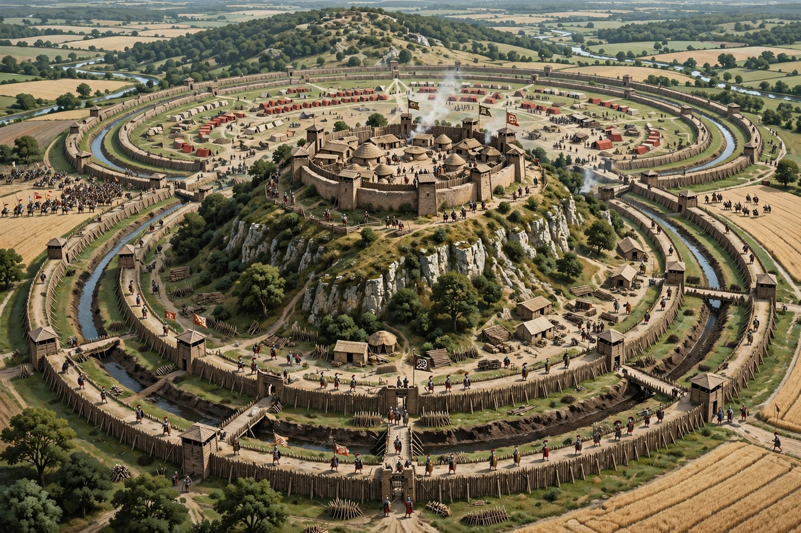

| Gallic Wars | |
|---|---|
| Date | 58 – 50 BCE |
| Location | Gaul (modern France, Belgium, parts of Germany, Switzerland, Britain) |
| Result | Roman victory; Gaul annexed to the Roman Republic |
| Roman commander | Julius Caesar |
| Principal Gallic leader | Vercingetorix |
| Primary source | Caesar, Commentarii de Bello Gallico |

The Gallic Wars were a series of military campaigns waged by the Roman proconsul Julius Caesar against the Celtic and Germanic peoples of Gaul between 58 and 50 BCE. They culminated in the decisive Roman victory at the Battle of Alesia in 52 BCE, after which Gaul was annexed as a province of the Roman Republic. Caesar's own account, the Commentarii de Bello Gallico, remains the principal source for the wars and a classic of Latin literature.
Caesar intervened in Gaul ostensibly to block the migration of the Helvetii in 58 BCE, defeating them at Bibracte and the Germanic king Ariovistus shortly after. In 57 BCE he subdued the Belgae of the north, and in 56 BCE his legates crushed the Veneti and other maritime peoples. Caesar twice crossed the Rhine (55 and 53 BCE) and twice invaded Britain (55 and 54 BCE), though Britain was not annexed. Revolts flared repeatedly, most seriously the ambush of a legion by Ambiorix's Eburones in 54 BCE.
In 52 BCE the Arvernian chieftain Vercingetorix united much of Gaul in revolt, pursuing a scorched-earth strategy and defeating Caesar at Gergovia. Caesar trapped Vercingetorix's army in the hill-fort of Alesia and built some 60 kilometres of double siege works, defeating a huge relief army and starving the defenders into surrender. Mopping-up operations continued into 51 and 50 BCE. Ancient sources claim a million Gauls died and another million were enslaved; modern historians treat the figures cautiously but agree the demographic impact was severe.
The conquest gave Rome control of western Europe up to the Rhine, enormously enriched Caesar, and gave him the loyal army with which he would cross the Rubicon in 49 BCE and plunge Rome into civil war. Gaul was progressively Romanised over the following centuries, though its Celtic heritage, rooted in the La Tène world, left lasting traces.
Julius Caesar · Vercingetorix · Battle of Alesia · Gaul · La Tène culture